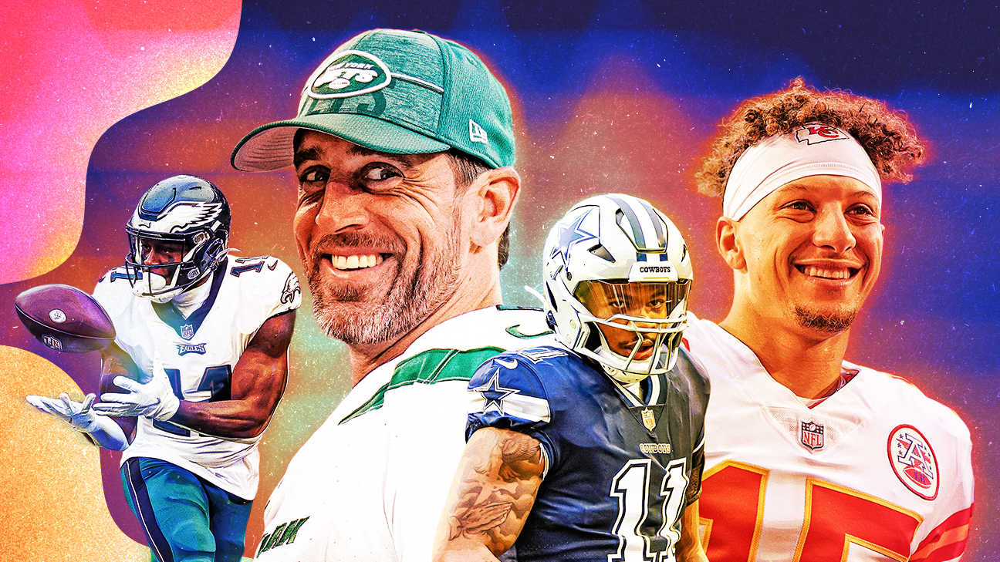
FELLAS! It’s so good to be back and doing what we love. Thanks for the great draft and for being a great league!
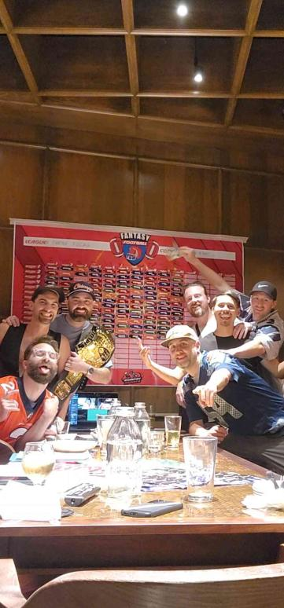
When the league starts, I typically do a matrix, grading QB, RB, WR, TE and FLEX/Bench. This year I’ve given a slight boost to WR and QB, a slightly smaller boost to RB, and with Kelce’s injury, I’ve leveled TE to no boost (probably stupid). The higher the index, the better. This is a funny and stupid exercise as it won’t be close to the league finish… Next week, Joel and PJ will guest host the Power Rankings to roast me.
But nonetheless, I give you… The Week One Power Rankings!
- Snake 🐍
Week One / Draft Grades
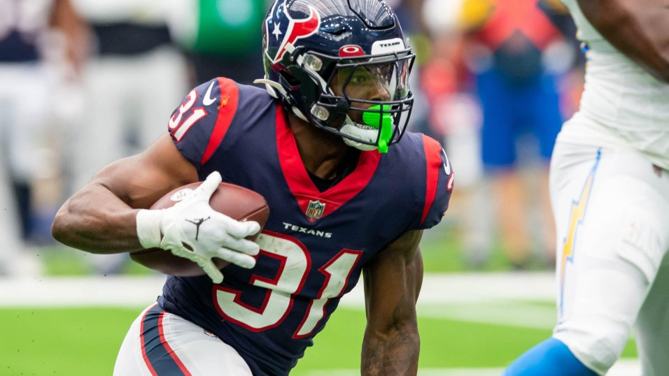
1. PJ -> A
Raw Score: 40.4 Favorite Picks: Mark Andrews / Dameon Pierce Least Favorite: Breece Hall
Jefferson and Waddle is so stong. I love the Andrews and Fields picks too, but I have some questions about the running backs… But I think he’s got four guys that could pop, so two or more probably do. Fields has the potential to be QB1, but he could also suck and lose the job (Bears stink). Breece is amazing, I just feel like the Jets brought Dalvin in to keep Aaron happy and keep him in a lot of protection/check down situations.
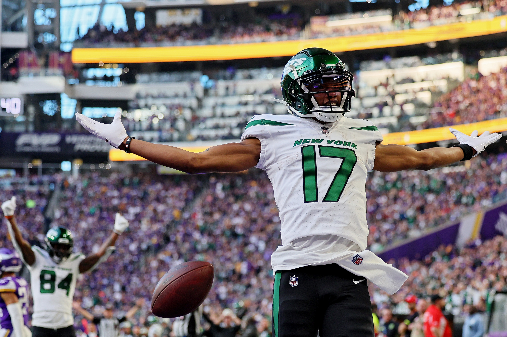
2. Jake -> A
Raw Score: 39.7 Favorite Picks: Alvin Kamara / Garrett Wilson Least Favorite: Brandin Cooks
As the biggest Jets fan in the room, I’m stoked with Garrett Wilson (and Tyreek Hill) at WR. I’m fully in love with my starting RBs, in Pollard and Gibbs, with backups(!) Aaron Jones and Alvin Kamara. I think I have the most potent flex options with those two, and Diontae Johnson (who will definitely score a touchdown this year!)
3. Tony -> B+
Raw Score: 32.8 Favorite Picks: Jordan Addison / Christian McCaffrey Least Favorite: Christian Watson
When I glance at Tony’s team, I don’t think I’d have shot them to the top of my list, but the rankings said differently. I put Kelce in as TE2 with the unknown injury, but moving him up to one didn’t make him go up either. I suddenly am out on Miles Sanders (and all Panthers), and I don’t think I’ve seen Christian Watson catch more than one pass, so I’m probably just downgrading him from ignorance. Two Christians on this team, so Jesus is on his side.
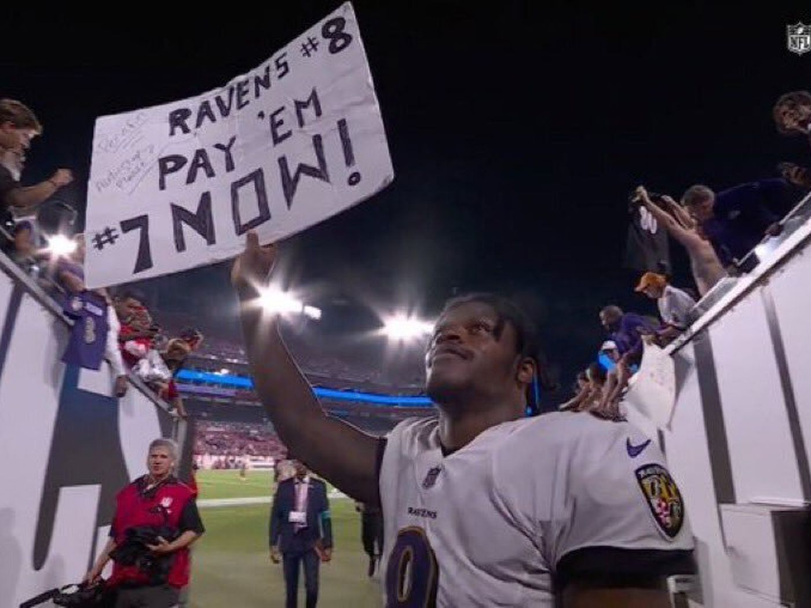
4. Neil -> B+
Raw Score: 32.2 Favorite Picks: Lamar Jackson / Rachaad White Least Favorite: Dalton Schultz
I liked Neil’s draft a lot. Hence his least favorite pick is Schultz, who I think might not survive tomorrow’s waivers (the print deadline is midnight on Wednesdays). I love Lamar this season. Barkley/Conner and Ceedee/Higgins lead the all-boring but maybe rock-solid team. (Ceedee isn’t boring, but the pairing is)
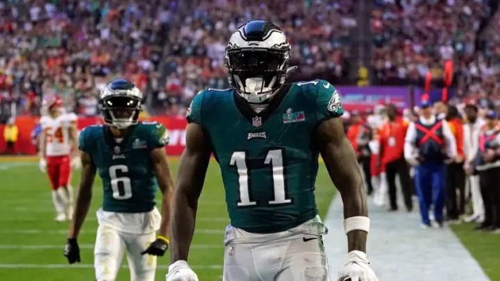
5. Pangy -> B
Raw Score: 30.9 Favorite Picks: AJ Brown / Devante Adams Least Favorite: Terry McLaurin
The CPU did things right by absolutely stacking the WR starters, but lots of questions with F1, Beckham, and Toney rounding out the position. F1 is one of the guys who I soured on a ton this offseason. But the sour left in my mouth from last season, Swift, could be a huge boom this year - who knows what the Eagles are doing in their backfield right now, but the Lions surely fucking hated him.
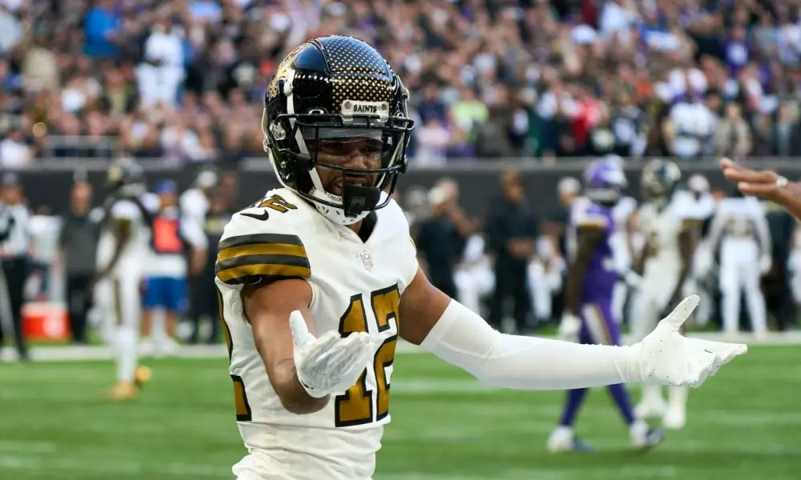
6. Joel -> B
Raw Score: 30.4 Favorite Picks: Chris Olave / James Cook Least Favorite: Miles Sanders
I love Olave in the second; he was my target there but I was lucky for Wilson to fall to me (thanks for not keeping anyone Pangy!) Miles Sanders is another one of those guys that I think I liked on Draft Day, but now am fully out on (dunno, don’t ask!) RB was very thin for Joel before (cursing and) flipping Kelce - Goedert will fill in well and gives Joel the stack with keeper Hurts, but I have a feeling he’ll be missing him late in the year. Also, what a shitty Chiefs fan!
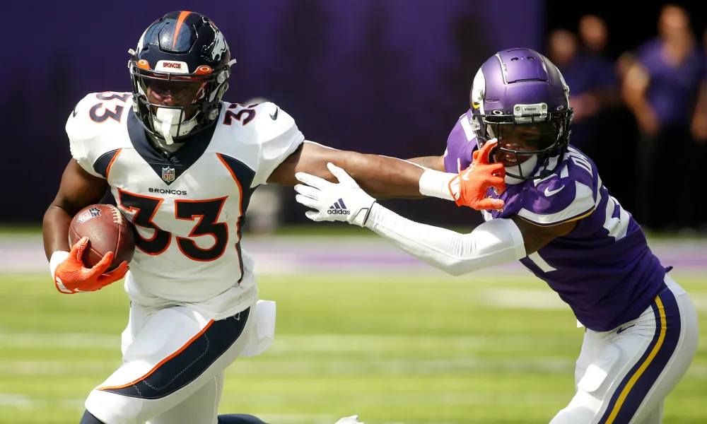
7. Seif -> B-
Raw Score: 28.6 Favorite Picks: Javonte Williams / Antonio Gibson Least Favorite: Deshaun Watson
If Kupp is healthy, Matt’s up a few spots. I love the upside all over this roster. Okonkwo could be a pivot point on this team, as he’s special, but who knows with rookie TEs. If he’s a banger, he turns into the ultimate keeper as the last-round pick. If Javonte returns to be nearly the player he was before the injury, Seif’s team is right there with the best RB rooms in the league.
Please, everyone… don’t let Matt win this year.
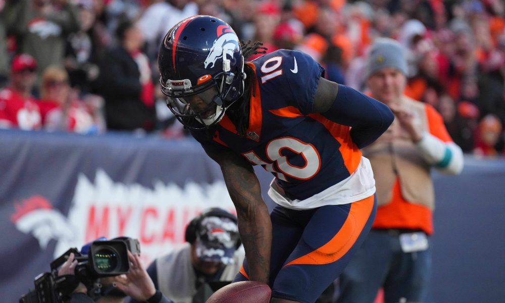
8. Kris -> C+
Raw Score: 26.8 Favorite Picks: Darren Waller / Jerry Jeudy Least Favorite: Justin Tucker
Nearing the bottom of the rankings, we typically start thinking about various spellings of the name Kris/Chris/Turner, and here we are again.
KJT pulled the card and got Mahomes again, we know he loves him. The Ridley and Metcalf flip in the 3rd and 4th could be significant, but it’s a little unknown. Probably because I am a little bit of a hater, but I think Geno could trend down this year and Metcalf could be affected - even though last year he was first in end zone targets, he could regress too. Ridley is probably the most boom-or-bust player, after missing the majority of last two seasons. Kris could prove us wrong and pop up in the rankings, but I’m suspect on the RBs.
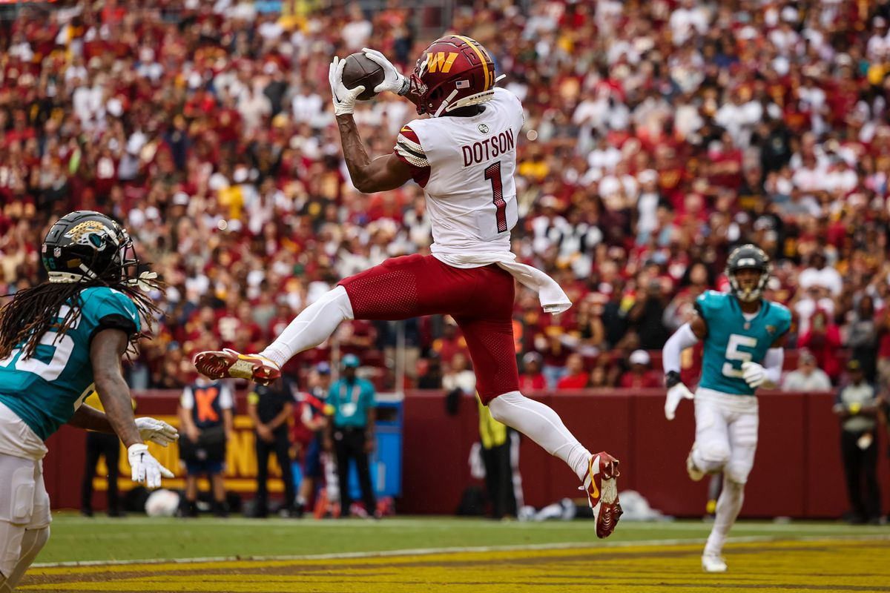
9. Chris -> C-
Raw Score: 24.6 Favorite Picks: Jahan Dotson Least Favorite: JK Dobbins / Jonathan Taylor
Top-to-bottom, this is the team I hate. Of course, it’s fantasy football, so there are things to like. But the JT pick is going to haunt forever. JK Dobbins is a prima donna, thinking he should be paid when he ain’t done shit (and literally doesn’t catch any passes). Hollywood might be QB-proof… but Dobbs is willing to test the theory. Jammal Williams can’t reproduce the over-the-top TD numbers again… right?! Chris was a legendary slutler - and should get his outfit back out of storage.
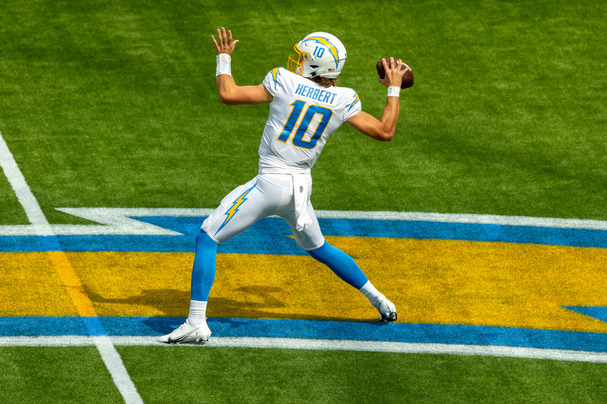
10. Andy -> D
Raw Score: 21.6 Favorite Picks: Justin Herbert / Amon St. Brown Least Favorite: Kyle Pitts / AJ Dillon
I would much rather have this roster, compared to Chris’s, but the rankings didn’t like Andy. What can we say, it’s fucking science.
I love the Ekeler/Herbert stack, since Ekeler is a TD/reception magnet. But rounds 8->14 were horrweebull. Actually, I like Higbee with the last pick to back up Pitts, because who knows what we’re getting with him this year? If Andy gets two-years-ago Herbert, Pitts, Najee and Deebo, he’ll rise to the top quickly. Is that a formula for drafting? We’ll see.
Best of luck to everyone besides Chris! 🔥
These rankings are written by a fool. Don’t listen to me! ⬇️
“Keep moving forward, don’t listen to the naysayers, persevere, be persistent.” – Rudy